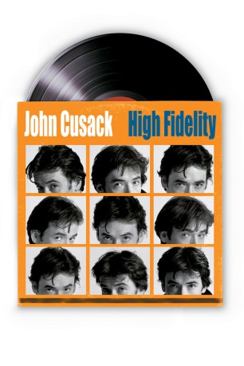
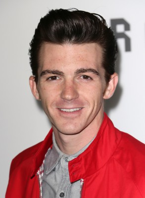

#2209 High Fidelity
 
 IMDB-Wertung: 7.5 / 10
IMDB-Wertung: 7.5 / 10  Metascore: 79
Metascore: 79 
Rob Gordon ist in den Dreißigern, sein Leben plätschert vor sich hin, er ist seit einiger Zeit mit Laura zusammen und verdient sein Geld mit seinem Plattenladen „Championship Vinyl“, wo mit dem sehr zurückhaltenden DJ Dick und dem extrovertierten Rockstar in spé Barry zwei absolute Musik-Nerds für ihn arbeiten. Ex-DJ Rob hat sich mit seinem Leben arrangiert, er verabschiedet sich langsam von seinen Träumen und verlebt seine Tage, ohne dabei sonderlich unglücklich zu sein. Sicher, die Dinge könnten besser laufen, aber eben auch schlechter. Die Zeit wird es schon regeln…
Jahr: 2000
Dauer: 113 Minuten
FSK: 12
Land: England Studio: Touchstone Home EntertainmentTonspuren: DTS - ,
Untertitel: Deutsch,
Auflösung: 1080p (1920x1040) Größe: 7925 MB
Genre: Drama, Musik, Komödie, Liebe
Regisseur:  Stephen Frears
Stephen Frears
Drehbuch: Nick Hornby, D.V. DeVincentis, Steve Pink, John Cusack, Scott Rosenberg
Soundtrack: Howard Shore
Darsteller:
 John Cusack als Rob Gordon
John Cusack als Rob Gordon Iben Hjejle als Laura
Iben Hjejle als Laura Todd Louiso als Dick
Todd Louiso als Dick Jack Black als Barry Judd
Jack Black als Barry Judd- Lisa Bonet als Marie De Salle
 Catherine Zeta-Jones als Charlie Nicholson
Catherine Zeta-Jones als Charlie Nicholson Joan Cusack als Liz
Joan Cusack als Liz Tim Robbins als Ian Raymond
Tim Robbins als Ian Raymond Lili Taylor als Sarah Kendrew
Lili Taylor als Sarah Kendrew Joelle Carter als Penny Hardwick
Joelle Carter als Penny Hardwick- Natasha Gregson Wagner als Caroline Fortis
-  Drake Bell als Rob Jr. High
- Sara Gilbert als Anaugh Moss
- Rich Talarico als Barry's Customer
- Brian Powell als Middle Aged Customer
- Jillian Peterson als Laura's Sister Jo
- Susan Yoo als Girl - 19 Year Old
 Chris Bauer als Paul
Chris Bauer als Paul Aaron Himelstein als Boy in Park
Aaron Himelstein als Boy in Park David Darlow als Mourner
David Darlow als Mourner- Bruce Springsteen als Himself
- Alex Désert als Louis
- Andrew Micheli als Party Guest
- Susie Cusack als Party Guest
 Scott A. Martin als Bartender
Scott A. Martin als Bartender- Heather Norris als Laura's Friend
- James Azrael als Glam Rocker , uncredited
- Mark Finney als Record Store Customer , uncredited
 Reese Foster als Cafe' Patron , uncredited
Reese Foster als Cafe' Patron , uncredited- Penny Marshall als Funeral Attendee - In Front of Rob , uncredited
- Ian Michaels als Guy in Chem Lab , uncredited
- Tristan Layne Tapscott als Guy on the Street , uncredited
- Chris Rehmann als Vince
- Ben Carr als Justin
- Shannon Stillo als Alison Jr. High
- Laura Whyte als Laura's Mom
- Matthew O'Neill als Beta Band Customer
- Margaret Travolta als Rob's Mom
- Dick Cusack als Minister
 K.K. Dodds als Miranda
K.K. Dodds als Miranda- Marilyn Dodds Frank als Alison's Mom
- Duke Doyle als Kevin Bannister
- Jonathan Herrington als Chris Thompson
- Daniel Lee Smith als Rock Guy
- Leah Gale als Mourner
- Erik Gundersen als Marco
- Alan S. Johnson als Man in Store
- Ian Belknap als Party Guest
- Polly Noonan als Party Guest
- Philip Rayburn Smith als Party Guest
Datei: X:\2000\High Fidelity (2000, FSK12, 1920x1040).mkv seit 21.10.2015
Festplatte: HD 1996-2002
 Es gibt insgesamt 82 Filme in der Gruppe '2000'
Es gibt insgesamt 82 Filme in der Gruppe '2000'